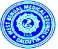

|  |
WEST BENGAL MEDICAL COUNCIL 8, Lyons range (3RD Floor ) kolkata – 700 001 ( 2213-7679, 2231-5662 Email: wbmc@vsnl.net NOTICE BOARD |
|
FOLLOWING THE RESIGNATIONS OF DR. ASOK CHOUDHURY, THE PRESIDENT, DR. SUBIR KUMAR DUTTA, THE VICE-PRESIDENT AND DR. PURNENDU JHA, A MEMBER OF THE COUNCIL, DULY ACCEPTED BY THE GOVERNMENT OF WEST BENGAL ON 4TH JULY 2011, NO MEETING OF THE COUNCIL WAS HELD THEREAFTER. THE COMPLAINANTS ARE REQUESTED TO BEAR WITH US TILL THE WEST BENGAL MEDICAL COUNCIL MADE FUNCTIONARY. EXPEDITING OF COMPLAINT CASES IS ASSURED AS AND WHEN THE COUNCIL WOULD START FUNCTIONING. |
Sd/- D K Ghosh Registrar West Bengal Medical Council |
Dated, the 1st February, 2011 |
|
NOTICE TO MEDICAL PRACTITIONERS |
|
| [A] FOR DELIVERY OF UPDATED CERTIFICATES 2009 - 2010 | |
Now, all Updated Registration Certificates upto Regn.No. 61336 (Registered upto 31.12.2005) have been made ready and will be delivered on and from 01.02.2011 from the Office of the Council at the above address (including Registration Number upto 46000 who had not yet collected their Certificates). Medical Practitioners may collect their Updated Certificates either in person or through Authorised Representative by producing ‘Letter of Authority’ where signature of bearer must be attested by the Medical Practitioner with his/her registration number. Medical Practitioners, registered upto 31.12.2005 but not yet updated their registration, may update their data on filling up of Application Form and payment of Service Charge as indicated below. |
|
[B] UPDATING PROCEDURE FOR THE DOCTORS REGISTERED |
|
Proforma of Application either may be downloaded from our Website and printed in a legal size white paper or collected from Council’s office free of cost and to be submitted, duly filled in and signed together with service charge through post or in person in our Office Address as mentioned above. |
|
SERVICE CHARGE – |
|
(i)
|
Rs.350.00 for the doctors registered between the period 01.01.2006 and 31.12.2008 |
Service Charge may be paid in the form of Bank Draft favouring ‘West Bengal Medical Council’ payable at Kolkata or in cash within the cash hours upto 2.30 PM. In no way Cheque would be accepted. This Service Charge is only for updating purpose. For recording of Additional Qualification (s), Change of Surname (for female candidates) etc., separate application is to be filled in and signed with prescribed fee in addition to the Service Charge, as mentioned above. A new Registration Certificate affixing with Hologram, would be given. Registration number will remain unchanged. All such Applications will be received by the Council upto 31.03.2011. |
|
Sd/- |
|
West Bengal Medical Council Date: October 01, 2010 |
An Appeal from the West Bengal Medical Council |
The West Bengal Medical Council is deeply concerned about the incidences which occurred at different Medical College Hospitals at Kolkata during the past few days, when patients were deprieved of getting medical service, following assault on a section of doctors. However, even though there is some provocation, all concerned should refrain from such activities. Under the situation, attention of all Registered Medical Practitioners is drawn to various provisions mentioned in the Code of Medical Ethics (available in website www.wbmc.in) especially Code 13 & 16 specifying the duties, obligation and responsibilities of the physician towards the patients. However, the Council appeals to the people at large to allow doctors to work undisturbed in different hospitals which would be beneficial to the patients. People should not take law in their own hands under any circumstances. Hope, congenial atmosphere would prevail in future. |
West Bengal Medical Council |
West Bengal Medical Council Date: 23rd April 2010 |
This is for information of all concerned doctors registered with West Bengal Medical Council that Medical Council of India has recently made amendment in the Indian Medical Council (Professional Conduct, Etiquette and Ethics Regulations 2002) pertaining to “Code of Conduct for Doctors & Professional Association of Doctors in their relationship with pharmaceutical & allied health sector industry”, which has come into force from the date of Gazette of India Notification i.e. on 10.12.2009. Medical Council of India circulated the said amendment in their “Code of Medical Ethics” with a request to give it a wider publicity and accordingly West Bengal Medical Council at their meeting held on 23rd March 2010, in agreeing with the views of the Medical Council of India, displaying the following for information of the doctors and Professional Association of Doctors to follow strictly the stipulations laid down in Clause 6.8. “Code of Conduct for Doctors & Professional Association of Doctors in their relationship with pharmaceutical & allied health sector industry” [a] Gifts A Medical Practitioner shall not receive any gift from any Pharmaceutical or Allied Health Care Industry and their Sales People or Representatives. [b] Travel Facilities A Medical Practitioner shall not accept any Travel Facility inside the Country or outside, including rail, air, ship, cruise tickets, paid vacations, etc. from any Pharmaceutical or Allied Health Care Industry or their Representatives for self and family members for vacation or for attending conferences, seminars, workshops, CME programme, etc. as a delegate. [c] Hospitality A Medical Practitioner shall not accept individually any hospitality like hotel accommodation for self and family members under any pretext. [d] Cash or Monetary Grants -- A Medical Practitioner shall not receive any cash or monetary grants from any Pharmaceutical and Allied Health Care Industry for individual purpose in individual capacity under any pretext. Funding for medical research, study, etc. can only be received through approved institution by modalities laid down by law/ rules/guidelines adopted by such approved institution, in a transparent manner. It shall always be fully disclosed. [e] Medical Research à A Medical Practitioner may carry out, participate in, work-in-research projects funded by Pharmaceutical and Allied Health Care Industries. A Medical Practitioner is obliged to know that the fulfillment of the following items (i) to (vii) will be imperative for undertaking any research assignment/project funded by industry – for being proper and ethical. Thus, in accepting such a position a Medical Practitioner shall: -
[f] Maintaining Professional Autonomy à In dealing with Pharmaceutical and Allied Health Care Industry a Medical Practitioner shall always ensure that their shall never be any compromise either with his/her own professional autonomy and/or with the autonomy and freedom of the medical institution. [g] Affiliation à A Medical Practitioner may work for Pharmaceutical and Allied Health Care Industries in advisory capacities/ as consultants, as researchers, as treating doctors or any other professional capacity. In doing so, a Medical Practitioner shall always: -
[h] Endorsement à A Medical Practitioner shall not endorse any drug or product of the industry publicly. Any study conducted on the efficacy or otherwise of such products shall be presented to and/or through appropriate scientific bodies or published in appropriate scientific journals in a proper way. |
( D K GHOSH ) |
West Bengal Medical Council Date: 31st March 2010 |
THIS IS FOR INFORMATION OF ALL CONCERNED THAT AS PER DECISION OF THE COUNCIL TAKEN AT ITS MEETING ON 30TH MARCH 2010 NO FURTHER APPLICATION FOR UPDATING OF REGISTRATION BE RECEIVED AFTER 31ST MARCH 2010. |
( D K GHOSH ) |